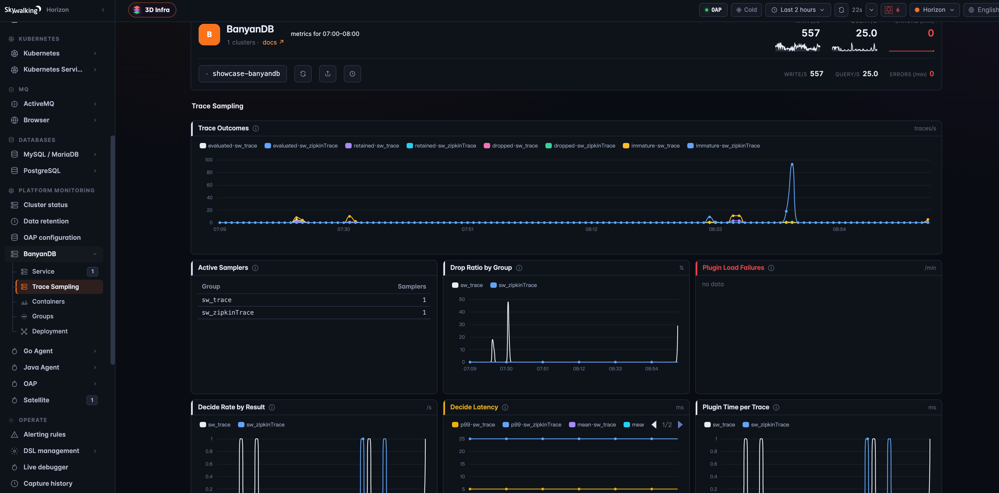

Trace Tail Sampling Inside the Storage Engine with SkyWalking 11 and BanyanDB 0.11
Trace Tail Sampling Inside the Storage Engine
Apache SkyWalking 11.0.0 and BanyanDB 0.11.0 ship trace tail sampling. Unlike every sampling gate SkyWalking had before, this one runs after the trace is stored: the BanyanDB data node judges each trace as a whole while it compacts its own files, and a trace that fails the rules is simply never written into the merged output. The decision sees the entire trace, end to end, and the space it frees is space that had already been spent.
This post explains why the decision moved into the storage engine, which traces are kept, how to turn it on, and how to check that it is working.
The problem with deciding early
Traces are the most expensive signal an observability platform stores. Metrics aggregate; traces do not. Every request that passes through ten services leaves ten segments and dozens of spans behind, and the overwhelming majority of them describe a request that was fast, succeeded, and will never be looked at.
SkyWalking already had two ways to thin that stream, and both decide before the write:
- Agent-side sampling decides at the root span, when nothing downstream has happened yet. A 10% random sample throws away 90% of the errors along with 90% of the noise.
- Server-side sampling in the OAP (
trace-sampling-policy-settings.yml) adds a rate, a force-keep for error segments, and a slow-segment threshold. It is a real improvement, but it works per segment, the slice of a trace produced by one service instance, because that is the unit the OAP receives. The documentation is candid about the consequence: you get the error and slow segments, “although it is not guaranteed that you would have the whole traces.”
Both share a limit. At ingest time nobody has seen the whole trace. The questions that actually decide whether a trace is worth keeping — was the request slow end to end, did anything fail anywhere in it, did it touch a particular database or queue — can only be answered once every span has arrived.
Classic tail sampling answers them with a buffering tier: a collector holds every span of every in-flight trace in memory, waits out a decision window, and needs all spans of one trace routed to the same instance. It works, but it adds a stateful tier that scales with in-flight traffic, and it still decides before storage, so nothing it lets through is ever reclaimed until TTL.
Why the storage engine is the right place
BanyanDB stores spans grouped and sorted by trace_id. Like most modern databases it uses an
LSM (log-structured merge tree) layout: new data is written to small immutable files, and a
background compaction periodically rewrites many small files into fewer larger ones. When
that rewrite happens, all spans of a trace pass through it together.
That is where the sampler runs. Compaction was going to read and rewrite those spans anyway; tail sampling just adds a decision to it. A trace that passes is rewritten as usual. A trace that fails is not rewritten, and its space is gone when the old files are removed.
SkyWalking agents ─┐
Zipkin / Istio ─┼──► OAP ──► BanyanDB ──► traces stored in the Hot stage
OpenTelemetry ─┘ │
routine compaction of the stored data
│
┌─────────────────────────────────────────┴───────────────────────────┐
│ trace still inside the grace window ──► untouched, judged later │
│ mature trace ──► sampler rules ──► keep: rewritten as usual │
│ ──► drop: not rewritten, freed │
└─────────────────────────────────────────────────────────────────────┘
│
optional FINALIZE sweep: bounded re-check of settled data compaction never reached
Warm and Cold stages are never touched
What this buys you:
- The verdict covers the whole trace. Every segment or span is seen together and kept or dropped as a unit. There are no half-kept traces.
- No extra tier. Nothing sits between the OAP and storage holding spans in memory.
- Space is really reclaimed, not marked for deletion. Dropped traces are never rewritten.
- Traces stay queryable until judged. A grace window keeps every trace intact for as long as someone is likely to be looking at it.
When the decision happens
Two events can run the sampler, chosen per storage group:
PIPELINE_EVENT_MERGE, the default, runs during routine compaction. It is best-effort: a trace is judged only when the data around it happens to be compacted, so a quiet shard may hold traces that are never evaluated before they expire.PIPELINE_EVENT_FINALIZEadds a periodic, bounded background sweep over data that has settled, so traces are evaluated even where routine compaction never reaches them. It is a backstop rather than a guarantee: after the first round a shard is revisited only when enough new data has arrived, with a cooldown between rounds and a lifetime cap on rounds, and resource guards can defer work or retain traces. It costs some extra background I/O and has to be named explicitly; an empty event list means MERGE only.
Only the Hot stage is ever sampled. Once a trace has migrated to Warm or Cold storage it is kept for the stage’s full TTL.
Which traces are kept
BanyanDB ships two samplers, one per trace schema SkyWalking writes. sw-trace-sampler.so
handles the native segments reported by SkyWalking agents. zipkin-trace-sampler.so handles
Zipkin spans, which is also where service-mesh traces from Istio and Envoy and OpenTelemetry
traces end up, since the OAP converts OTLP traces to Zipkin format on receipt. Both samplers
run the same rules and differ only in where they read the inputs.
The rules are OR-ed: the first one that matches keeps the trace, and a trace that matches none of them is dropped.
- Duration. The trace’s end-to-end duration reaches
durationThresholdMs. - Errors.
keepErrorsis set and the trace carries an error. - Tag rules. Any
keepTagRulesentry matches a searchable tag. - Healthy sample. A fixed fraction of whatever is left,
healthySampleRate.
Duration is end to end
duration = max(span start + span duration) − min(span start) over the whole trace
keep if duration ≥ durationThresholdMs
This is exactly what a per-segment gate could never express. Three chained 400 ms calls have no single span above 400 ms, but an end-to-end duration of 1.2 s, so a 1000 ms threshold keeps that trace.
The healthy sample is stable
The sample is chosen by hashing the trace ID, not by rolling dice. A trace may be evaluated more
than once over its life, and a random draw would give it a fresh chance to be dropped each time.
With a hash, the kept fraction is a fixed subset of traces: 0.1 keeps the same 10% every time.
It is a statistical rate rather than a quota, and it is not balanced across services. “Always
keep the payment service” has to be a tag rule.
Tag rules match searchable tags
The OAP stores every searchable tag of a trace in one list of key=value entries, and tag rules
match against that list, either as {tagKey, exists|equals|in|regex} objects or in the compact
key=value,key=~regex,key form that fits in an environment variable. A rule has to name a tag
the instrumentation actually emits; a rule that names a storage column such as service_id
cannot match and is rejected when the sampler loads, rather than silently never firing.
| Input | sw-trace-sampler |
zipkin-trace-sampler |
|---|---|---|
| Searchable tags | tags |
query |
| Error signal | is_error column |
error tag inside query |
| Duration unit | milliseconds | microseconds, normalized |
durationThresholdMs is milliseconds on both.
A worked example
Say the pipeline is on with the shipped defaults, plus one tag rule: keep traces slower than 500 ms end to end, keep errors, keep anything that touches PostgreSQL, and keep 10% of the rest.
SW_STORAGE_BANYANDB_TRACE_PIPELINE_ENABLED=true
SW_STORAGE_BANYANDB_TRACE_SAMPLER_KEEP_TAG_RULES='db.type=PostgreSQL'
Five requests hit the system at 10:00. The SkyWalking agents report their segments, the OAP writes them to BanyanDB, and all five traces show up in the UI right away, exactly as they would without sampling:
trace segment start latency is_error searchable tags
T1 POST /order (gateway) 10:00:00.000 40 ms
T1 order-consumer (Kafka) 10:00:00.600 380 ms
T1 notify-consumer (Kafka) 10:00:01.000 150 ms
T2 POST /login (gateway) 10:00:01.000 45 ms
T2 auth-svc 10:00:01.005 38 ms true
T3 GET /songs (gateway) 10:00:02.000 30 ms
T3 songs-svc 10:00:02.004 24 ms db.type=PostgreSQL
T4 GET /health (gateway) 10:00:03.000 3 ms
T5 GET /health (gateway) 10:00:04.000 4 ms
For the next 30 minutes nothing happens to them; that is the grace window. Then, the next time BanyanDB compacts the files holding these traces, the sampler sees each trace whole and applies the rules in order:
| Trace | What the sampler sees | Verdict |
|---|---|---|
| T1 | No segment is slow on its own, but the trace runs from 10:00:00.000 to 10:00:01.150: 1,150 ms end to end |
Keep, rule 1 (duration) |
| T2 | The auth-svc segment has is_error = true |
Keep, rule 2 (errors) |
| T3 | Fast and healthy, but carries db.type=PostgreSQL |
Keep, rule 3 (tag rule) |
| T4 | Fast, healthy, no matching tag. Hash of its trace ID lands at 0.07, below 0.1 |
Keep, rule 4 (healthy sample) |
| T5 | Fast, healthy, no matching tag. Hash of its trace ID lands at 0.63 |
Drop |
T1 to T4 are rewritten into the compacted file as usual. T5 is not, and once the old files are removed its space is gone. Query the UI afterwards and you find four complete traces and no trace of T5, not a partial one.
Two of these are worth a second look, because they are exactly the cases ingest-time sampling gets wrong:
- T1 is an asynchronous order flow through Kafka. Every segment is under 400 ms, so a server-side slow-segment threshold of 500 ms would never fire, and the request would only survive by luck of the sampling rate. Judged as a whole, it is plainly slow.
- T2 would be kept by the server-side
forceSampleErrorSegmentoption too, but only theauth-svcsegment. Its gateway segment carries no error and is subject to the rate, so the trace that reaches the UI may be missing the request that caused the failure. Tail sampling keeps both segments or neither.
Safe by default
Deleting stored data is the one thing a database must never get wrong, so every path is biased towards keeping.
- A grace window protects fresh traces. Nothing younger than the merge grace is touched. The
OAP ships an explicit 30 minutes; the data node’s own default is two hours if you hand the
decision back to it with
-1. - Never a half-deleted trace. If any part of a trace might live in data the current compaction cannot see, the trace is kept and judged another time.
- Plugin failures fail open. A plugin load failure preserves the previous working sampler configuration; without one, all traces are retained. A sampler that crashes, errors, or times out is bypassed for that batch, and a rule that cannot be evaluated keeps the trace.
- Configuration is strict. Every option is a keep rule, so a misspelled key that was silently ignored could drop the whole group. Unknown keys and an empty config are rejected outright.
- Memory is bounded. If a single compaction would drop more traces than its memory budget allows, it stops dropping and keeps the rest.
Turning it on
Tail sampling is off by default everywhere, and enabling it in the OAP alone does nothing. It takes effect only where the data node can load the sampler plugin and the group’s pipeline is enabled. Anything short of that is inert, not broken: a node without plugin support ignores the config, and one that cannot load the plugin keeps its previous working sampler configuration, or retains everything if it never had one.
1. Run a plugin-capable BanyanDB data node
Samplers are Go plugins, and Go can only load a plugin into a binary built with exactly the same toolchain. The default BanyanDB image cannot host one, so BanyanDB publishes two extra images, built together from the same commit:
| Image tag | Contents | Role |
|---|---|---|
<tag> / <tag>-slim |
the default server | hosts no plugins |
<tag>-plugins |
a plugin-capable server with an empty /plugins |
the host |
<tag>-plugins-carrier |
the sampler .so files at /plugins |
mounted into the host |
Always deploy the carrier at the same tag as the host. Both images are pushed for every commit
on main as ghcr.io/apache/skywalking-banyandb:<commit>-plugins and
<commit>-plugins-carrier; the 0.11.0 release is commit 3b83e18fb0481d02e44eaa5df137fcf7b000754b.
You can also build them from a checkout of the tag:
BINARYTYPE=plugins make -C banyand docker # the host image
make -C banyand docker.plugins-carrier # the carrier image
Only data nodes host plugins. The portable way to deliver the carrier is an init container
copying into a shared volume; on Kubernetes 1.31+ an OCI image volume mounts it directly. Both
examples live under examples/kubernetes/plugins/ in the BanyanDB repository. Abridged:
spec:
initContainers:
- name: install-firstparty-plugins
image: <registry>/skywalking-banyandb:<tag>-plugins-carrier
command: ["sh", "-c", "cp /plugins/*.so /out/"]
volumeMounts:
- { name: plugins, mountPath: /out }
containers:
- name: banyandb-data
image: <registry>/skywalking-banyandb:<tag>-plugins
args:
- data
- -trace-pipeline-native-plugin-enabled=true
- -trace-pipeline-trusted-plugin-dir=/plugins
volumeMounts:
- { name: plugins, mountPath: /plugins }
volumes:
- name: plugins
emptyDir: {}
The two flags are the whole switch: one enables plugin hosting, the other names the single directory plugins may be loaded from.
2. Enable the pipeline in the OAP
The trace and zipkinTrace groups in bydb.yml carry a pipeline block that the OAP pushes
onto the BanyanDB group. The native trace group ships as:
storage:
banyandb:
trace:
pipeline:
enabled: ${SW_STORAGE_BANYANDB_TRACE_PIPELINE_ENABLED:false}
# PIPELINE_EVENT_MERGE and/or PIPELINE_EVENT_FINALIZE, comma-separated.
enabledEvents: ${SW_STORAGE_BANYANDB_TRACE_PIPELINE_ENABLED_EVENTS:PIPELINE_EVENT_MERGE}
# Only a positive value overrides the data node; -1 inherits its default.
mergeGraceSeconds: ${SW_STORAGE_BANYANDB_TRACE_PIPELINE_MERGE_GRACE_SECONDS:1800}
finalizeGraceSeconds: ${SW_STORAGE_BANYANDB_TRACE_PIPELINE_FINALIZE_GRACE_SECONDS:-1}
plugins:
- name: sw-trace-sampler
path: ${SW_STORAGE_BANYANDB_TRACE_SAMPLER_SO:sw-trace-sampler.so}
abiVersion: 1
config:
durationThresholdMs: ${SW_STORAGE_BANYANDB_TRACE_SAMPLER_DURATION_THRESHOLD_MS:500}
keepErrors: ${SW_STORAGE_BANYANDB_TRACE_SAMPLER_KEEP_ERRORS:true}
healthySampleRate: ${SW_STORAGE_BANYANDB_TRACE_SAMPLER_HEALTHY_SAMPLE_RATE:0.1}
keepTagRules: ${SW_STORAGE_BANYANDB_TRACE_SAMPLER_KEEP_TAG_RULES:[]}
So the minimum to switch it on is one environment variable, and a typical policy is a handful more:
SW_STORAGE_BANYANDB_TRACE_PIPELINE_ENABLED=true
SW_STORAGE_BANYANDB_TRACE_PIPELINE_ENABLED_EVENTS=PIPELINE_EVENT_MERGE,PIPELINE_EVENT_FINALIZE
SW_STORAGE_BANYANDB_TRACE_SAMPLER_DURATION_THRESHOLD_MS=1000
SW_STORAGE_BANYANDB_TRACE_SAMPLER_HEALTHY_SAMPLE_RATE=0.05
SW_STORAGE_BANYANDB_TRACE_SAMPLER_KEEP_TAG_RULES='db.type=PostgreSQL,mq.queue=queue-songs-ping'
The plugin config is passed through verbatim; the OAP does not interpret the keys. That is what
lets a third-party sampler with its own options be wired in from the same block.
Keep in mind that server-side sampling and tail sampling are independent gates. Enabling both multiplies the drop rate, and the ingest-side gate still splits traces per segment. If storage can afford to hold everything for the grace window, tail sampling alone gives a cleaner result.
3. Check that it is actually filtering
Open the Trace Sampling page under BanyanDB in the SkyWalking UI. The Active Samplers
table must show a count above zero for each group you enabled, and Plugin Load Failures must be
empty. A zero means nothing is filtering, whatever bydb.yml says. Without the self-observability
collector, the same two numbers are on the data node’s own metrics endpoint (port 2121) as
banyandb_trace_pipeline_sampler_active_count{group} and
banyandb_trace_pipeline_sampler_load_failed. The
debugging guide
walks through the “nothing is being sampled” checklist.
Zipkin traces
Everything that does not come from a SkyWalking agent is stored as Zipkin spans: traces from
Zipkin-instrumented services,
from Istio and Envoy service meshes, and from
OpenTelemetry instrumentation,
which the OAP converts to Zipkin format on receipt. They all go through the same rules with
zipkin-trace-sampler.so, configured under the zipkinTrace group with its own
SW_STORAGE_BANYANDB_ZIPKIN_TRACE_* variables and a 1000 ms default threshold. Two things
differ, and both come from the schema rather than the sampler.
Zipkin has no error column, so keepErrors looks for Zipkin’s conventional error span tag.
Instrumentation that signals failure only through a 5xx http.status_code or otel.status_code
writes no error tag, and those traces need an explicit rule:
SW_STORAGE_BANYANDB_ZIPKIN_TRACE_SAMPLER_KEEP_TAG_RULES='http.status_code=~5\d\d'
And the OAP drops a searchable tag whose value exceeds 256 characters, so an error tag carrying
a long exception message is invisible to keepErrors. A short-valued tag rule such as the
status-code regex above is the reliable catch-all.
Watching it work
SkyWalking monitors BanyanDB the same way it monitors everything else. With the BanyanDB self-observability setup in place, where an OpenTelemetry Collector scrapes the cluster’s metrics and forwards them to the OAP, the BanyanDB layer in the UI gains a Trace Sampling page that puts the whole pipeline next to the cluster’s write and query rates:

The panels answer the questions you actually have:
- Active Samplers lists how many samplers are loaded for each group.
1forsw_traceandsw_zipkinTracemeans both pipelines are live;0means nothing is filtering that group. - Trace Outcomes shows, per group, how many traces were evaluated, retained, dropped, and immature, meaning seen by the sampler but still inside the grace window and left alone.
- Drop Ratio by Group is the share of evaluated traces that were actually removed, which is
the number to watch when tuning
healthySampleRateor the duration threshold. - Plugin Load Failures should stay empty. Anything here means a plugin was rejected and the group is still running its previous sampler configuration, or no sampling at all if it never had one.
- Decide Rate, Decide Latency, and Plugin Time per Trace show what the sampler costs the data node.
Because the OAP collects these metrics itself, you also see what the sampler proposed next to
what storage actually committed, without leaving SkyWalking. The rules behind the page ship in
OAP 11.1.0 and are already on main; the rest of the BanyanDB self-observability layer is in
11.0.0.
If you prefer Grafana, BanyanDB also ships a board that reads the same metrics straight from the cluster.
Expect some extra CPU on the data node during the compactions that run the filter, since the tag columns a sampler reads have to be decoded. In exchange, dropped traces are never rewritten and their space comes back.
Writing your own sampler
The built-in samplers cover the familiar duration, error, tag, and probabilistic rules. If you need something they cannot express, such as “keep if more than 30% of child spans errored” or a policy driven by data outside the trace, you can write your own. A sampler is a Go plugin that exports a constructor and implements one interface:
var ABIVersion = sdk.ABIVersion
func NewSampler(config []byte) (sdk.Sampler, error) // config is your JSON from bydb.yml
type Sampler interface {
Kind() Kind
Project() Projection // which tag columns you need
Decide(batch *TraceBatch) (Verdict, error) // one keep/drop per trace in the batch
Close() error
}
Each trace arrives with its ID, the tag columns you asked for, and optionally its span bodies;
you return a keep mask. Several samplers can be chained: each receives the same batch, their
successful keep masks are combined with AND, and a link that fails is bypassed.
The SDK includes an offline test toolkit that runs your Decide against hand-built traces
without a database, and third-party .so files are mounted at /plugins/thirdparty beside the
first-party carrier. The
development guide
covers the full workflow, including the toolchain requirements.
Limitations and what is next
- Very long traces that cross a storage segment boundary are judged one segment at a time. With day-long segments and traces measured in seconds this never matters.
- Both events are best-effort. MERGE only sees data that compacts; FINALIZE widens coverage with a bounded sweep but does not guarantee every trace is evaluated before it expires.
- Zipkin error detection is a tag convention, with the truncation caveat above.
- Per-stage retention is designed but not yet available. The plan is to let a group keep more in Hot and progressively less as data ages to Warm and Cold. In 0.11.0 a pipeline applies to the whole group.
Tail sampling inside the storage engine turns a tradeoff that used to be made blind, at the agent or at ingest, into one made with the whole trace in view. The interesting traces stay, the space comes back, and the mechanism defaults to keeping data whenever it is unsure.
Further reading
- Trace Tail Sampling — how a trace is judged, in the SkyWalking documentation
- BanyanDB storage configuration — the
pipelineblock and everySW_STORAGE_BANYANDB_*override - Server-side trace sampling — the ingest-side gates, for comparison
- BanyanDB self-observability dashboard — the Trace Sampling page and how the metrics reach the OAP
- Sampler plugins: packaging and deployment — images, mounts, and Kubernetes examples
- Sampler plugins: debugging — the “nothing is being sampled” runbook
- First-party sampler config reference
- Post-trace pipeline design — the full specification, for the curious